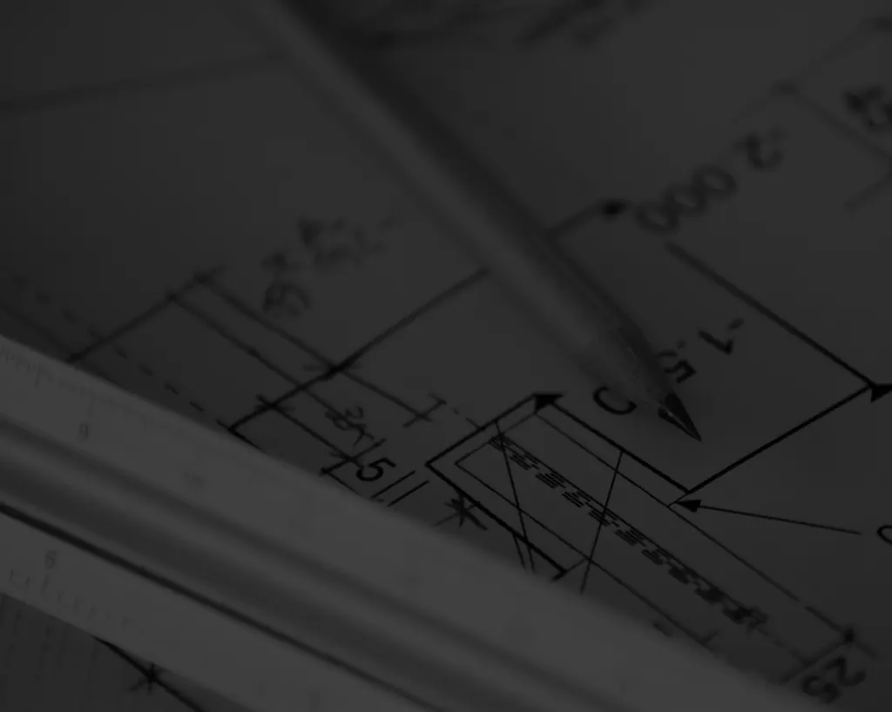

Samoobslužné mycí boxy
Šest programů od mytí disků přes aktivní pěnu a hlavní mytí až po vosk a leštění.

Horní Bříza
3 samoobslužné boxy, 2 výkonné vysavače, bezkontaktní technologie. Otevřeno nonstop.
Navštívit myčku
Již brzy
Připravujeme pro Vás něco nového. Sledujte nás — již brzy se dozvíte více.
Zjistit víceF.X. CarWash s.r.o.
F.X. CarWash je samoobslužná bezkontaktní automyčka v Horní Bříze na Plzeňsku, kousek od Plzně. Umyjete u nás auto kdykoli — ve dne, v noci i o víkendu — bez kartáčů, bez objednání a bez čekání ve frontě.
Mycí centrum najdete přímo u čerpací stanice MOL na adrese K Černému mostu. Čeká na vás tři samoobslužné mycí boxy s programy na disky, aktivní pěnu, hlavní mytí, horký vosk a závěrečné leštění, dva výkonné vysavače a měnička peněz. Platit můžete hotově, platební kartou i předplacenou kartou F.X.
Co u nás najdete
Šest programů od mytí disků přes aktivní pěnu a hlavní mytí až po vosk a leštění.
Vysání interiéru kdykoli během dne i noci, bez rezervace a bez čekání.
Otevřeno nepřetržitě, 24 hodin denně, 7 dní v týdnu, včetně svátků.
Zvýhodněné karty s kreditem navíc — i jako firemní benefit nebo dárek.
Kde nás najdete
Mycí centrum leží přímo při silnici č. 27 mezi Plzní a Kaznějovem, což z něj dělá pohodlnou zastávku i pro řidiče z Třemošné, Kaznějova a severního Plzeňska. Zajet můžete kdykoli — není třeba se objednávat.
K Černému mostu
330 12 Horní Bříza
U čerpací stanice MOL